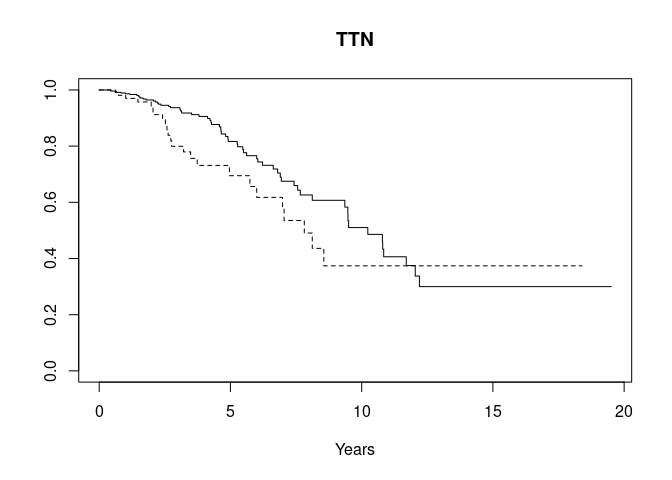
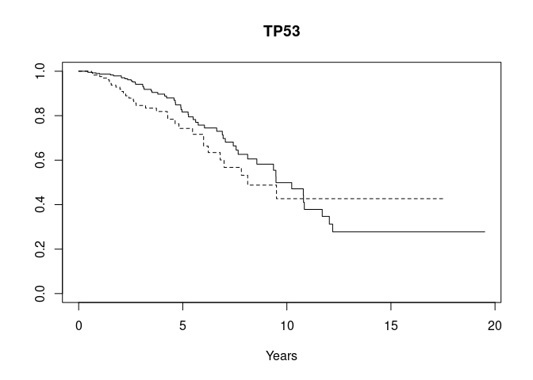
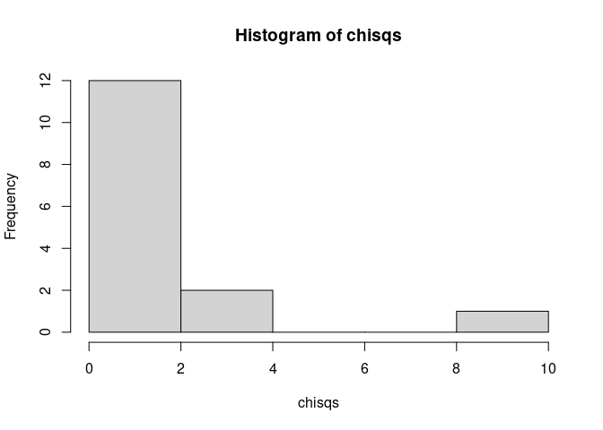
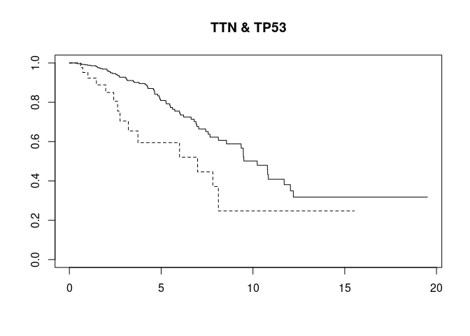

This repository provides reproducible examples and tables shown in the “RaggedExperiment: the missing link between genomic ranges and matrices in Bioconductor” manuscript. Below is an example use case provided by Vincent J. Carey. See the Articles section to see other use cases and table code.
if (!requireNamespace("RaggedExperiment", quietly = TRUE))
install.packages("BiocManager")
BiocManager::install("RaggedExperiment")
suppressMessages({
bmut <- curatedTCGAData("BRCA", "Mutation", dry.run=FALSE, version="2.0.1")
})
sampleTables(bmut)
#> $`BRCA_Mutation-20160128`
#>
#> 01 06
#> 988 5
bmut.srv <- TCGAprimaryTumors(bmut)
#> harmonizing input:
#> removing 5 sampleMap rows with 'colname' not in colnames of experiments
sampleTables(bmut.srv)
#> $`BRCA_Mutation-20160128`
#>
#> 01
#> 988
anyReplicated(bmut.srv)
#> BRCA_Mutation-20160128
#> TRUE
## Obtain names of replicate samples by colData rowname
replicates <- Filter(length,
lapply(
replicated(bmut.srv)[["BRCA_Mutation-20160128"]],
function(x) {
colnames(rgmut)[x]
}
)
)
sum(sapply(replicated(bmut.srv), any))
#> [1] 9
## OR
length(replicates)
#> [1] 9
ragex <- bmut.surv[["BRCA_Mutation-20160128"]]
table(mcols(ragex)$Variant_Classification)
#>
#> Frame_Shift_Del Frame_Shift_Ins In_Frame_Del In_Frame_Ins Missense_Mutation Nonsense_Mutation Nonstop_Mutation RNA Silent
#> 3162 2567 627 161 55063 4841 133 4474 17901
#> Splice_Site
#> 1561
## mcolsFilter (?)
ragex <- ragex[mcols(ragex)$Variant_Classification != "Silent", ]
table(mcols(ragex)$Variant_Classification)
#>
#> Frame_Shift_Del Frame_Shift_Ins In_Frame_Del In_Frame_Ins Missense_Mutation Nonsense_Mutation Nonstop_Mutation RNA Splice_Site
#> 3162 2567 627 161 55063 4841 133 4474 1561
bmut[["BRCA_Mutation-20160128"]] <- ragex
#> harmonizing input:
#> removing 16 sampleMap rows with 'colname' not in colnames of experiments
system.time({
mutsyms <- as(
lapply(
as(bmut.surv[["BRCA_Mutation-20160128"]], "GRangesList"),
function(x) x$Hugo_Symbol
),
"CharacterList"
)
})
#> user system elapsed
#> 3.349 0.000 3.349
mutsyms
#> CharacterList of length 793
#> [["TCGA-A1-A0SB-01A-11D-A142-09"]] ABLIM1 ADAMTS20 CADM2 DTNB ENSG00000267261 MSH3 MYB NPIPL2 OR11H1 OTOR P2RY10 PIEZO1 SLC6A9 SOX15 SPTB TMEM247 ZNF566 ZNF574 ZNF777
#> [["TCGA-A1-A0SD-01A-11D-A10Y-09"]] ANK3 CASK CNTFR CPEB2 CSTL1 CXorf58 DCAF8 FAM182B GATA3 HECTD4 ... SLC44A3 SLFN14 SNX5 STK11IP SYNE1 TLR5 WDR72 ZFP91 ZNF544 ZNF740
#> [["TCGA-A1-A0SE-01A-11D-A099-09"]] APLF ARRDC4 B3GNT1 C3orf38 CDH1 DCDC2B FAM102A FAM102A FHL1 IMPDH2 ... SDR16C5 SYDE2 TBC1D12 TBL1X UNC13C WDR86 WDR91 ZFHX4 ZNF541
#> [["TCGA-A1-A0SF-01A-11D-A142-09"]] ACRBP ARL6IP6 BEST3 C9orf43 CECR2 CUL7 DDX53 DUSP27 EPPK1 EXT2 FIGN ... PTPRD RIT2 SFMBT2 SKOR1 SPPL2C ST7 TP73 TPH1 UBE2QL1 ZNF91
#> [["TCGA-A1-A0SG-01A-11D-A142-09"]] ARC BPIFB3 C2orf73 CECR2 CEP290 CSMD2 DSCAM DYSF ERN1 EWSR1 ... PADI2 PPID RNA5-8SP6 SCN7A SLC29A2 SYNPO2L TMEM99 TYSND1 ZNF217
#> [["TCGA-A1-A0SH-01A-11D-A099-09"]] ACSL4 AHCTF1 ALPK3 ANK3 ANKRD7 APOBR ARHGAP28 ASL ATPIF1 BDP1 ... TIFAB TMC8 TTC39A UNC93B1 UPRT USH2A WDR7 WDR87 ZFHX4 ZNF606
#> [["TCGA-A1-A0SI-01A-11D-A142-09"]] ABAT ABCA8 ACAN ACPP ACTR3B ADCK3 AGFG2 AHNAK AKR1C1 AKT2 ... ZNF345 ZNF366 ZNF419 ZNF436 ZNF436 ZNF518A ZNF673 ZNF701 ZNF790
#> [["TCGA-A1-A0SJ-01A-11D-A099-09"]] ALG1 AMZ2 ASCL3 CHML CILP COL20A1 ENSG00000235041 FAF2 FAM115C GJB2 ... RANBP6 SCN4A SNAI1 SPEN TH1L TRBV6-8 UBAP1L ZBTB11 ZNF543
#> [["TCGA-A1-A0SK-01A-12D-A099-09"]] ABCA11P ACBD5 AHNAK ALMS1P ANKRD36B ANKRD42 ARHGAP42 ARL11 ASB10 ... YIPF7 YTHDF2 ZNF234 ZNF417 ZNF469 ZNF469 ZNF66P ZNF717 ZNF777
#> [["TCGA-A1-A0SM-01A-11D-A099-09"]] AHDC1 ATP1A4 CLEC12A CP CSMD1 DCST1 EGR3 ESYT1 GOLGA3 HEATR4 ... SEZ6L2 SMARCA1 STEAP2 TBC1D8 TCTE1 TSNARE1 ZAN ZNF229 ZNF804B
#> ...
#> <783 more elements>
system.time({
print(table(sapply(mutsyms, function(x) sum(duplicated(x)))))
})
#>
#> 0 1 2 3 4 5 6 7 8 9 10 11 12 14 15 16 17 20 21 22 23 24 25 26 27 28 29 30 31 32 33 37 39
#> 354 184 80 45 24 18 7 5 6 1 2 1 4 1 1 2 2 2 2 2 1 2 2 1 1 2 2 2 1 2 3 1 1
#> 48 49 51 52 57 64 66 70 72 73 79 83 90 91 95 96 102 104 136 166 170 221 264 726 1009 1469
#> 1 1 2 1 2 1 1 1 1 1 1 1 1 1 1 1 2 1 1 1 1 1 1 1 1 1
#> user system elapsed
#> 0.030 0.062 0.092The display, based on 793 observations with non-missing TCGA OS.Time, is consistent with the display at the GDC Data Portal, based on 1077 cases.
gstrat <- function(sym="TTN", mutlist, survdat) {
stopifnot(inherits(survdat, "Surv"))
stopifnot(length(survdat) == length(mutlist))
hassym <- unlist(list(sym) %in% mutlist)
plot(survfit(survdat~hassym), main=sym, lty=1:2, xlab="Years")
}
gstrat("TTN", mutsyms, osurv)
gstrat("TP53", mutsyms, osurv)
commut <- head(sort(table(unlist(mutsyms)), decreasing = TRUE), 30)
commut
#>
#> PIK3CA TTN TP53 MUC16 GATA3 MAP3K1 MUC12 MLL3 MUC4 SYNE1 CDH1 RYR2 CROCCP2 DST FLG DMD SPEN FCGBP USH2A HMCN1
#> 312 300 272 134 97 91 78 75 69 65 64 62 58 58 56 52 52 51 51 50
#> RYR3 SYNE2 AHNAK MUC5B NEB OBSCN AHNAK2 APOB XIRP2 HRNR
#> 50 50 48 48 47 47 46 45 45 43
hasmut <- function(sym="TP53", mutlist) {
sapply(mutlist, function(x) sym %in% x)
}
table(hasmut("TP53", mutsyms), hasmut("PIK3CA", mutsyms))
#>
#> FALSE TRUE
#> FALSE 341 198
#> TRUE 192 62
indicate_pair <- function(sym1, sym2, mutlist)
hasmut(sym1, mutlist) & hasmut(sym2, mutlist)
chk <- apply(common_pairs,2,function(z) indicate_pair(z[1], z[2], mutsyms))
chkp.inds <- which(apply(chk,2,sum)>20) # disallow very rare combos
dim(chk)
#> [1] 793 435
dim(chk[,chkp.inds])
#> [1] 793 15
chisqs <- apply(chk[,chkp.inds],2,function(z)survdiff(osurv~z)$chisq)
hist(chisqs)
cpr <- common_pairs[,chkp.inds][, which(chisqs>5)]
plot(survfit(osurv~chk[,chkp.inds[which(chisqs>5)]]), lty=1:2, main=paste(cpr, collapse=" & " ))
dom <- assay(bmut.surv[[1L]], "domain_WU")
length(grep("Znf", na.omit(as.character(dom)))) # frequently noted
#> [1] 1857
register(MulticoreParam(parallel::detectCores() - 1L))
system.time(
mutdoms <- bplapply(
seq_len(ncol(dom)),
function(x) as.character(na.omit(dom[,x]))
)
)
#> user system elapsed
#> 0.172 2.421 3.241
noz <- sapply(mutdoms, function(x) length(grep("Znf", x))==0)
table(noz)
#> noz
#> FALSE TRUE
#> 520 273
survdiff(osurv~noz)
#> Call:
#> survdiff(formula = osurv ~ noz)
#>
#> N Observed Expected (O-E)^2/E (O-E)^2/V
#> noz=FALSE 520 51 50.1 0.0168 0.0395
#> noz=TRUE 273 37 37.9 0.0221 0.0395
#>
#> Chisq= 0 on 1 degrees of freedom, p= 0.8
nosh3 <- sapply(mutdoms, function(x) length(grep("SH3", x))==0)
survdiff(osurv~nosh3)
#> Call:
#> survdiff(formula = osurv ~ nosh3)
#>
#> N Observed Expected (O-E)^2/E (O-E)^2/V
#> nosh3=FALSE 109 8 8.32 0.01215 0.0136
#> nosh3=TRUE 684 80 79.68 0.00127 0.0136
#>
#> Chisq= 0 on 1 degrees of freedom, p= 0.9